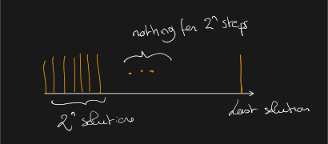

Main contribution
IncP1 = DelayP
with polynomial memory blow up.
true
true
14 février, 2023
Let A(x) be a set.
EnumA is the problem of outputting A(x) given x.
Examples:
In this talk, A is an NP-predicate, that is:
Previous examples have this property.
How to measure the complexity of an algorithm solving an enumeration problem?
Total time needed to output every solution.
There can be exponentially many.
EnumA is in OutputP if it can be solved in time polynomial in:
Total time is not always satisfactory:
Delay: the longest time one has to wait between the output of two solutions.
Enumerate (a+b)n:
Both have linear total time but delay in Method 1 is exponential.
One focus in enumeration complexity has been to design algorithms with polynomial delay.
Bounding the delay is not necessarily what we want.
We want guarantees: by waiting f(t,n), t solutions have been output.
IncP1
For every t, after t ⋅ p(n) steps, the algorithm has output at least t solutions.
We say that p(n) is the incremental delay.
Clearly DelayP ⊆ IncP1: after delay × t, at least t solutions output.
For the other way around: 2n delay but incremental delay of 2.

Given an IncP1-enumerator E with incremental delay d, one can regularize the delay using a queue to delay the output:
… but need to know the incremental delay.
Given:
There is no RAM which enumerates the elements of E(x) in delay (|E(x)|−2)p(n).
From unknown incremental delay d to delay O(d1 + ϵ):
… but the memory may blow up.
IncP1 = DelayP
with polynomial memory blow up.
Meet Coussinet
For every IncP1-enumerator E with N solutions:
there exists a DelayP-enumerator with
When E0 is finished, Ei has moved by at least 2i + 1d steps: it has explored all its zone.
Between two outputs: at most l × 2d simulated steps.
Cost of simulation: depends on the model of computation (here RAM with uniform cost model).
Two hard limits:
Given:
There is no RAM which enumerates the elements of E(x) in the same order as E in polynomial delay and polynomial space.
The approach generalizes to collapse the following classes:
… in theory.
IncP1 requirements are weaker than DelayP.
In practice: we have few examples where it helps, any idea?
Branch and bound based enumeration algorithms (flashlight) with average delay d can be modified to:
Enumeration of models of a DNF in delay n2m1 − log3(2).
Enumeration of k-colorable graphs in polynomial time and polynomial space.
The right notion is incremental delay.
Do not use our method!